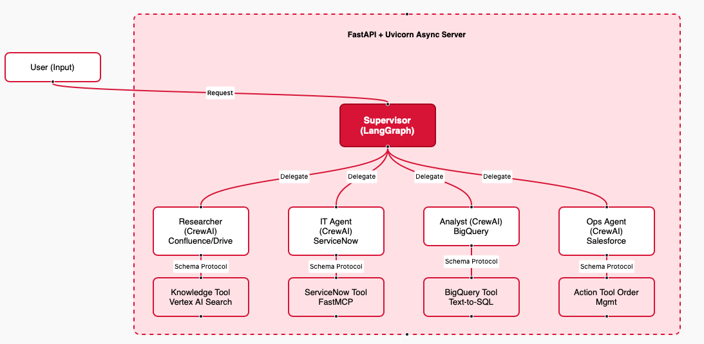
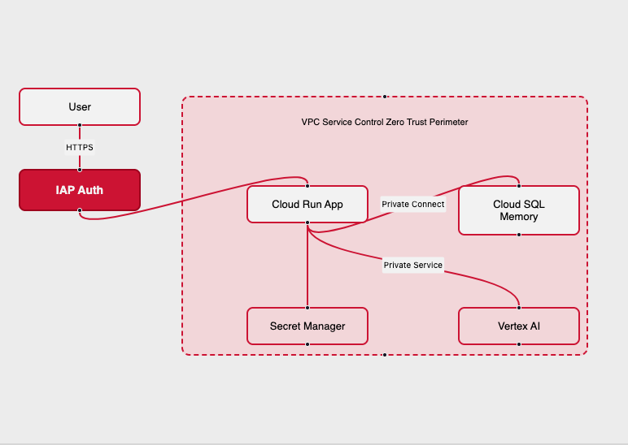

Strategic Architecture Study
Slide 1: The Vision
From "Static Chatbot" to "Sovereign Virtual Workforce"
The Goal: Augment our 25k employees with a secure, AI-powered "Virtual Team" that executes complex tasks while adhering to strict EU data sovereignty.
Strategic Drivers:
- Productivity: Offload L1 Support & Ops actions to autonomous agents.
- Sovereignty: 100% EU Data Residency (GDPR) with Zero Trust architecture.
- Ownership: Owning the "AI Brain" vs renting "Black Box" SaaS copilots.
Slide 2: Logical Architecture (The "Virtual Team")
Governance by Orchestration. Execution by Standardized Protocols.

- Orchestrator: The "Brain". Handles policy, routing, and compliance.
- Specialists: The "Workers". Focused on specific domains (IT, Ops, BI).
- Standardized Connectors: We trade "License Fees" for "Engineering Ownership" using FastMCP (Python).
- Maintenance Strategy: Strictly typed schemas (Pydantic) and automated contract testing ensure stability when SaaS APIs change.
Slide 3: Supervisor Guardrails (Safety First)
How we prevent hallucinations and misuse at the front door.
The Supervisor is our "Gatekeeper". It runs strict checks before routing any request:
- Topic Adherence: Zero-shot classification rejects off-topic queries (e.g., "Write a poem") to save compute costs.
- Prompt Injection Shield: Vertex AI Safety filters + Custom Regex block "Jailbreak" attempts.
- Router Consistency: Structured Output Validation ensures the Supervisor interacts only with valid agents.
- PII Reduction Firewall:
- Cloud DLP automatically masks credit cards, phones, and emails before the prompt hits the LLM.
Slide 4: Hybrid RAG Strategy (The Brain)
Right Tool for the Right Data. Privacy per Design.
| Data Type |
Strategy |
Security & Validation |
Corporate Knowledge
(Confluence, Drive) |
Vertex AI Search |
Secure, multimodal (PDFs/Slides). No training on data. ACLs preserved. |
Structured Business Data
(BigQuery) |
Semantic Text-to-SQL |
Dry-Run Validator: We verify SQL syntax and column existence before execution. Read-only access via Service Account. |
Transient Uploads
("Read this PDF now") |
Ephemeral RAG |
Malware Scanned -> Encrypted -> Embedded -> Deleted after 24h. Zero long-term storage of user files. |
Slide 5: Physical Architecture (Secure Enclave)
Deployment: GCP Europe-West9 (Paris)

- Zero Trust Ingress: Identity-Aware Proxy (IAP) verifies user identity. No VPN required, but stronger than VPN.
- Data Exfiltration Protection: VPC Service Controls prevent data from leaving our defined perimeter, even if credentials are compromised.
Slide 6: Secure Operations (Egress & Latency)
Connecting to the Enterprise safely.
- Identity Propagation ("On-Behalf-Of"):
- The agent impersonates the user. It sees only what the user is allowed to see (preserving existing Salesforce/Drive ACLs).
- Controlled Egress:
- Traffic flows through Cloud NAT with static IPs allowlisted by SaaS providers.
- Latency Management:
- Streaming API: Updates are pushed to the UI in real-time to mitigate the latency of multi-hop agent reasoning.
Slide 7: Operational Maturity (Day 2)
How we run, monitor, and fix it.
| Capability |
Implementation |
Value |
| Observability |
Distributed Tracing (LangSmith/OpenTelemetry) |
Trace a hallucination back to the specific retrieved document or agent decision. |
| QA & Testing |
"Golden Dataset" Regression |
CI/CD pipeline runs 100+ standard questions to ensure new code doesn't degrade answer quality. |
| Resilience |
Circuit Breakers |
Graceful degradation if a tool (e.g., ServiceNow) is slow or down. |
Slide 8: TCO & Roadmap
Investment Profile
- Infrastructure OpEx: ~€3,800 / month (Cloud Run, Vector DB, LLM Tokens for 1k users).
- Operational Team: Requires ~1.5 FTE (Platform Engineer + Data Steward) to maintain connectors and governance.
gantt
title Implementation Roadmap
dateFormat YYYY-MM-DD
section Phases
MVP (FAQs) :active, 2026-02-01, 60d
Industrialization (Ops & GitOps) :2026-04-01, 90d
Scale (Global) :2026-07-01, 180d
- Phase 1: FAQ/Knowledge (Focus on Security & Hosting).
- Phase 2: Industrialization (Focus on CI/CD, Observability, and Action Capabilities).
- Phase 3: Global Rollout.
Slide 9: Conclusion
Why Mnabaa?
- Secure: Built for Luxury standards (EU Residency, VPC-SC, Zero Trust).
- Control: We own the "Brain" and the "Connectors" (No Black Box SaaS).
- Mature: Designed for "Day 2" operations with full observability and regression testing.
Ask: Approval for Phase 1 (MVP) to validate the security model and deflection rates.